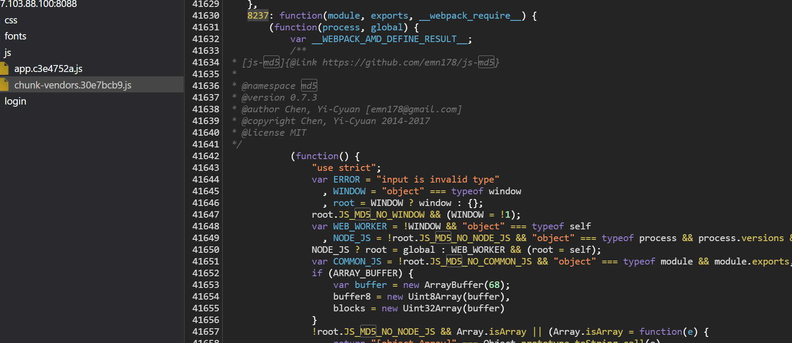

五种常见的前端加密场景
前端的加解密是比较常见的，无论是web的后台，还是小程序，都常常存在，加解密传输，签名，防篡改，这些机制，导致很多时候测试人员没有办法直接对参数的值进行更改，确实增加了攻击者的攻击成本。
本文结合一些实践案例，总结一些常见的前端加密场景
MD5 案例
很常规的一个登录页面，抓包查看登录请求，可以发现 password 字段被加密处理

通过搜索登录路径，定位到加密函数，可以看出调用了JS-MD5库

对password 字段的处理相当于md5(md5()) ,二次md5
在控制台，对js中的函数和值进行输出，看是否可以得到我们需要的结果
接下来在burp中的 payload processing hash 2次即可
DES 案例
抓包查看登录请求
可以看到目标站点对username和password都进行了加密
查看调用的js代码
可以发现是 des 加密，调用 des.js
那么其实现在在控制台就可以调用加密函数了
DES.Encrypt("admin")
查看 des.js 文件
做了混淆，搜了下，是类似 eval(function(p,a,c,k,e,r){}) 的加密，有在线还原的站点
得到DES的密钥值
AES 案例
抓包查看登录请求
可以看到目标站点对username和password都进行了加密
查看调用的js代码
从以上代码可以看出userLogin()函数中调用encrypt()函数对用户名和进行了加密，接下来全局追踪并查看encrypt()函数
可以看出使用了AES加密，ECB模式，填充模式pkcs7padding，密钥key=1234567887654321

同时，控制台也可调函数进行加密
encrypt('admin')
也可以结合BurpCrypto插件爆破账号密码
RSA 案例
抓包查看登录请求
可以看到目标站点对username和password都进行了加密,并且结果很长，很大可能是rsa加密
查看调用的js代码
可以看到publickey和encodeRSA关键字，目标站点对用户和密码都进行了rsa加密
此时，控制台可调函数进行加密
encodeRSA('admin', publicKey)
JSEncrypt的默认RSA加密机制是RSAES-PKCS1-V1_5，而且还会进行base64编码
签名
sig类似 作用：防篡改请求包
关键字：sign signature
目标小程序存在签名，需要伪造进行越权测试
反编译审计代码，搜索sign签名算法
a.data 判断有没有 post 内容，有就第一个表达式，没有则第二个表达式, i 是 xxxx123456 u 是 url.substr(1) 后面加 post 的内容 i 是时间 算个 md5 后面的表达式 xxxx 拼接 xxxx123456 url 以及时间戳
本地调用js，生成任意手机号签名
通过伪造的签名，可具备任意用户权限，可查看、修改任意用户信息
总结
前端加密用JSEncrypt库的很多，为了节省时间，可以直接试试搜一些jsencrypt相关的方法名，如setPublicKey、encrypt等,定位加密函数
关键字：Crypto AES DES RSA key password encrypt
前端加密作为在用户侧的防御手段,既增加攻击成本，又不影响业务，可谓是一种符合所有场景的防御办法，但前端传递参数的加密也需要配合js代码的混淆，否则攻击者依然可以轻易的绕过。